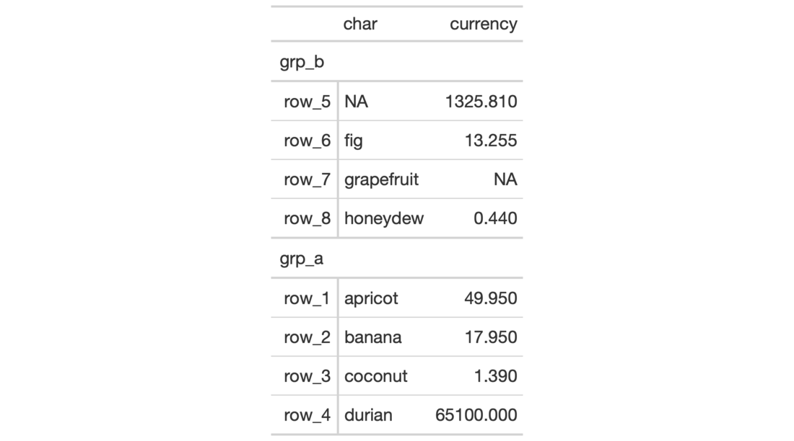

| row_group_order {gt} | R Documentation |
We can modify the display order of any row groups in a gt object with the
row_group_order() function. The groups argument takes a vector of row
group ID values. After this function is invoked, the row groups will adhere
to this revised ordering. It isn't necessary to provide all row ID values in
groups, rather, what is provided will assume the specified ordering at the
top of the table and the remaining row groups will follow in their original
ordering.
row_group_order(data, groups)
data |
A table object that is created using the |
groups |
A character vector of row group ID values corresponding to the revised ordering. While this vector must contain valid group ID values, it is not required to have all of the row group IDs within it; any omitted values will be added to the end while preserving the original ordering. |
An object of class gt_tbl.

5-1
# Use `exibble` to create a gt table
# with a stub and with row groups;
# modify the order of the row groups
# with `row_group_order()`, specifying
# the new ordering in `groups`
tab_1 <-
exibble %>%
dplyr::select(char, currency, row, group) %>%
gt(
rowname_col = "row",
groupname_col = "group"
) %>%
row_group_order(
groups = c("grp_b", "grp_a")
)